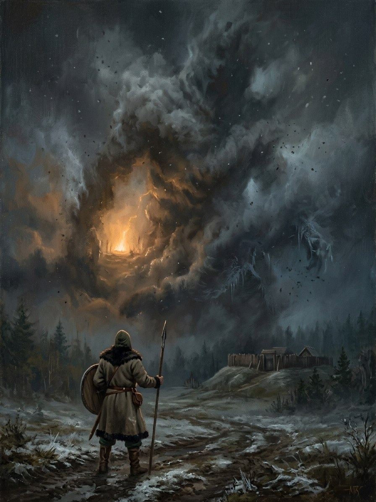

Perkūno Rūstybė¶
Nature¶
Native Force: Perkūnas after a thousand sworn oaths. It is the god’s attention hardened by human worship, war and oath-taking into appetite and agenda (Cosmology §2.1, §3.2). It is the saga’s invention built on the folk figure of the oath-keeping thunderer.
Perkūno Rūstybė

Perkūno Rūstybė · force¶
Type |
force |
Origin |
Native (face of a god) |
Note |
Thunder’s Wrath: primal cosmic fury against perjury, oath-breaking, and defilement. |
Wants¶
Oaths kept; cowards punished. Justice without mercy: it strikes its own as readily as the foe.
Takes (its price)¶
Claims on warriors. Marked Kęstutis, and Vytautas at Krėva in 1382 (Book I ch. 10, the mark): a heavy rhythm in the fingers, a smell of ozone, eyes that catch lightning. It acts through the claimed at moments of its choosing and punishes them when they break their own oath (magic rules §7). It does not empower at will.
Signs & manifestations¶
Lightning that strikes only banners and oaks; thunder that sounds like a traitor’s name; dry storms with no cloud (Book I ch. 6, ch. 21; Book V ch. 2). A single sourceless lightning stroke over Samogitia at Rasos 1411 closes the war (Book III ch. 29). A cracked window (Book I ch. 19) is a warning.
Vessels, servants, claims¶
Claimed: Kęstutis (Book VI), Vytautas. Instruments: the perkūnėlis carved under a sword’s grip (Book III ch. 2, 17; Book VI ch. 1, 16, 30); the oath over a claimed name binds the Force too. Feud with Jūratė and Bangpūtys.
Weaknesses¶
It can be bound by oath: “an oath on a claimed person’s name binds the Force too” (power systems §7), so Vytautas can swear to it and make it act. It cannot be bargained with, only kept faith with, and its claims are contested by the Root-Mother. It is silent when nothing is owed.
Arc across the books¶
VI: marks Kęstutis (ch. 13, 24). I: Krėva (ch. 10), the cracked window (ch. 19), the oak (ch. 21). II: an unspoken debt on the road (ch. 5), Skirgaila’s death “too late” (ch. 16), the Vorskla verdict (ch. 26). III: the renewed oath over the rusted sword (ch. 17); rewards a kept oath at Grunwald. IV: silent after the war (ch. 1). V: thunder at Vytautas’s funeral (ch. 2), once.
Nature Native Force (Layer II): justice without mercy
Born of Perkūnas after a thousand sworn oaths: the god's attention hardened by worship, war and oath-taking into appetite and agenda
Vessels No vessel. Claimed instruments: Kęstutis, Vytautas (1382-1430). Tools: the perkūnėlis carved under a sword's grip
Wants Oaths kept; cowards punished
Takes Claims on warriors. It acts through the claimed at moments of its choosing and punishes them for breaking their own oath
Signs Lightning that strikes only banners and oaks; thunder like a traitor's name; dry storms with no cloud; a heavy rhythm in the fingers; the smell of ozone; a cracked window as warning
Weaknesses An oath sworn on a claimed person's name binds the Force too. It cannot be bargained with, only kept faith with. It is silent when nothing is owed
No empowerment. A claimed mortal is an instrument, not a caster. The Force does not empower at will.
Strikes its own. It punishes the claimed for betraying its nature, as readily as foes.
Contested. The Root-Mother also wants Vytautas.
Oak and banner. Oath-places: oaks, banners, battlefields. It is strongest at the moment an oath is kept or broken before it.
Where it is quiet. When nothing is owed, it is silent.
Book I. Marks Vytautas at Krėva (ch. 10); the cracked window of the false baptism (ch. 19); lightning in the first battle, ambiguous by design (ch. 21).
Book II. An unspoken debt on the road (ch. 5); Skirgaila's death comes too late (ch. 16); the Vorskla verdict (ch. 26).
Book III. The renewed oath over the rusted sword (ch. 17); a kept oath rewarded at Grunwald; a single sourceless stroke over Samogitia at Rasos 1411 closes the war (ch. 29).
Book IV. Silent after the war (ch. 1).
Book V. Thunder at Vytautas's funeral, once (ch. 2).
Book VI. Marks Kęstutis (ch. 13, 24).
Connections¶
graph LR
claim["Žymė (claim)"]
kestutis["Kęstutis"]
perkunas["Perkūnas"]
perkuno_rustybe["Perkūno Rūstybė"]
vytautas["Vytautas"]
perkuno_rustybe -->|Force-face of| perkunas
perkuno_rustybe -->|Claims| kestutis
perkuno_rustybe -->|Claims| vytautas
perkuno_rustybe -->|Patron of| claim
style perkuno_rustybe stroke-width:3px